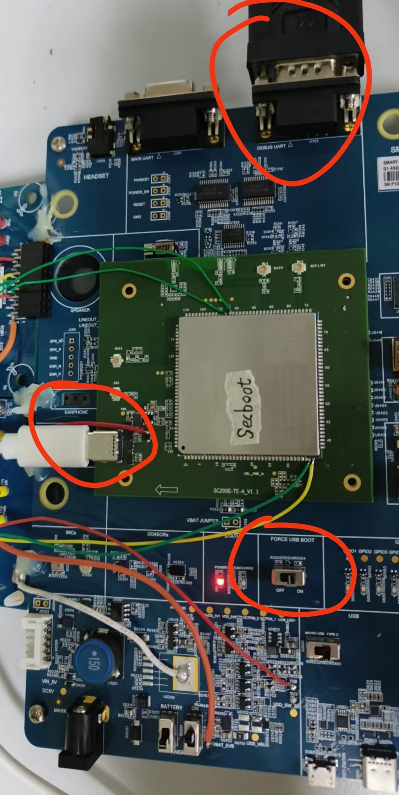
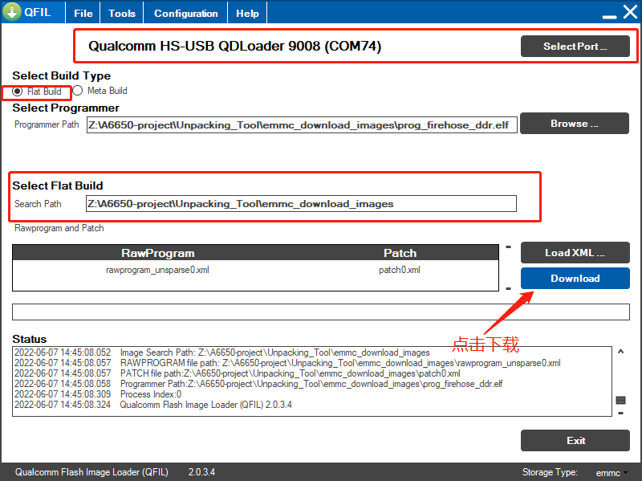
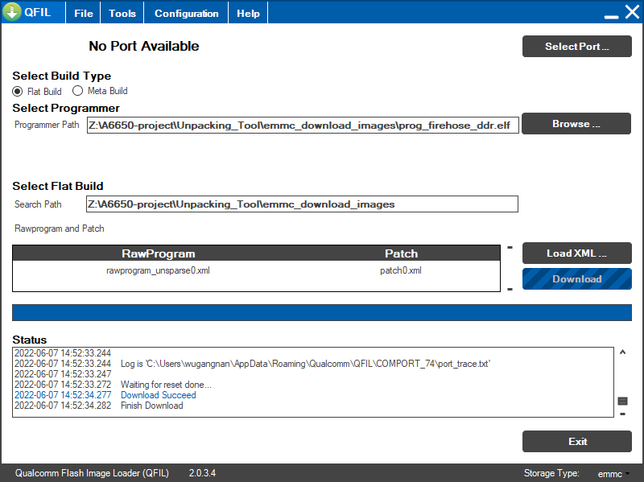
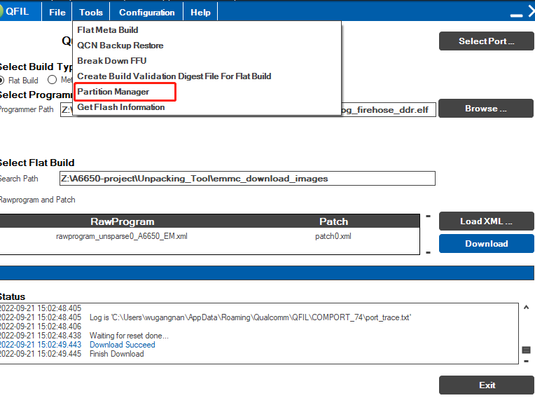
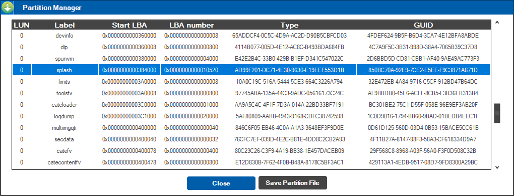
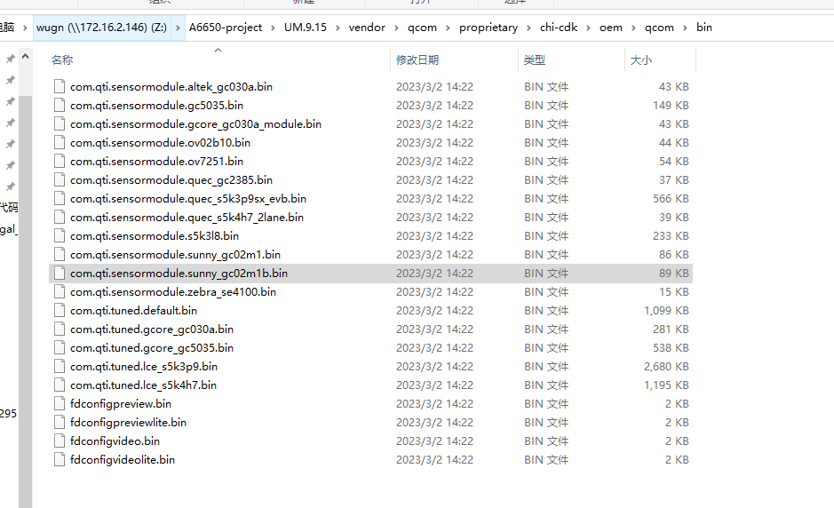

<!DOCTYPE html>
<html class="writer-html5" lang="zh-CN" >
<head>
  <meta charset="utf-8" /><meta name="generator" content="Docutils 0.17.1: http://docutils.sourceforge.net/" />

  <meta name="viewport" content="width=device-width, initial-scale=1.0" />
<title>wugn</title>

      <link rel="stylesheet" href="../../../_static/pygments.css" type="text/css" />
      <link rel="stylesheet" href="../../../_static/css/theme.css" type="text/css" />
      <link rel="stylesheet" href="../../../_static/default.css" type="text/css" />
  <!--[if lt IE 9]>
    <script src="../../../_static/js/html5shiv.min.js"></script>
  <![endif]-->
  
        <script data-url_root="../../../" id="documentation_options" src="../../../_static/documentation_options.js"></script>
        <script src="../../../_static/jquery.js"></script>
        <script src="../../../_static/underscore.js"></script>
        <script src="../../../_static/_sphinx_javascript_frameworks_compat.js"></script>
        <script src="../../../_static/doctools.js"></script>
        <script src="../../../_static/translations.js"></script>
        <script src="../../../_static/js/baidutongji.js"></script>
    <script src="../../../_static/js/theme.js"></script>
    <link rel="index" title="索引" href="../../../genindex.html" />
    <link rel="search" title="搜索" href="../../../search.html" /> 
</head>

<body class="wy-body-for-nav"> 
  <div class="wy-grid-for-nav">
    <nav data-toggle="wy-nav-shift" class="wy-nav-side">
      <div class="wy-side-scroll">
        <div class="wy-side-nav-search" >
            <a href="../../../index.html" class="icon icon-home"> wugn_note
          </a>
<div role="search">
  <form id="rtd-search-form" class="wy-form" action="../../../search.html" method="get">
    <input type="text" name="q" placeholder="在文档中搜索" />
    <input type="hidden" name="check_keywords" value="yes" />
    <input type="hidden" name="area" value="default" />
  </form>
</div>
        </div><div class="wy-menu wy-menu-vertical" data-spy="affix" role="navigation" aria-label="Navigation menu">
              <!-- Local TOC -->
              <div class="local-toc"><ul>
<li><a class="reference internal" href="#">概述</a></li>
<li><a class="reference internal" href="#id2">重要路径记录</a></li>
<li><a class="reference internal" href="#xbl-abllog">xbl/abl如何打开log</a></li>
<li><a class="reference internal" href="#evbqfil">EVB如何使用QFIL下载</a></li>
<li><a class="reference internal" href="#xbl">XBL编译</a></li>
<li><a class="reference internal" href="#id3">解锁烧录</a></li>
<li><a class="reference internal" href="#i2ctool">i2ctool使用</a></li>
<li><a class="reference internal" href="#id4">驱动中添加专属打印</a></li>
<li><a class="reference internal" href="#uefi">UEFI学习资料</a></li>
<li><a class="reference internal" href="#wakeup-source-register">wakeup_source_register使用</a></li>
<li><a class="reference internal" href="#gpio">如何查看目前gpio配置</a></li>
<li><a class="reference internal" href="#kernel">修改kernel打印等级</a></li>
<li><a class="reference internal" href="#qti-logkit">QTI LogKit抓取工具重启打不开</a></li>
<li><a class="reference internal" href="#androidhvdcp-high-voltage-deticated-charger-port">Android用户空间的hvdcp（high voltage deticated charger port）</a></li>
<li><a class="reference internal" href="#pmic-vote">pmic vote机制学习</a></li>
<li><a class="reference internal" href="#guid">随机GUID生成</a></li>
<li><a class="reference internal" href="#qfile">自定义QFile烧录镜像</a></li>
<li><a class="reference internal" href="#id5">各种命令</a></li>
<li><a class="reference internal" href="#id6">回读分区</a></li>
<li><a class="reference internal" href="#add2line">add2line使用方法</a></li>
<li><a class="reference internal" href="#filesystem-on-dev-block-by-name-metadata-was-not-cleanly-shutdown">Filesystem on /dev/block/by-name/metadata was not cleanly shutdown</a></li>
<li><a class="reference internal" href="#platform-version">新增属性PLATFORM_VERSION编译报错</a></li>
<li><a class="reference internal" href="#qfil">QFIL相关介绍</a></li>
<li><a class="reference internal" href="#android-audit2allow">android audit2allow工具使用步骤</a></li>
<li><a class="reference internal" href="#android-mk">Android.mk中打印输出信息</a></li>
<li><a class="reference internal" href="#user">如何打开user调试串口</a></li>
<li><a class="reference internal" href="#sp-monitor">sp monitor软件签名失败</a></li>
<li><a class="reference internal" href="#qcom-camera">qcom camera参数编译</a></li>
</ul>
</div>
        </div>
      </div>
    </nav>

    <section data-toggle="wy-nav-shift" class="wy-nav-content-wrap"><nav class="wy-nav-top" aria-label="Mobile navigation menu" >
          <i data-toggle="wy-nav-top" class="fa fa-bars"></i>
          <a href="../../../index.html">wugn_note</a>
      </nav>

      <div class="wy-nav-content">
        <div class="rst-content">
          <div role="navigation" aria-label="Page navigation">
  <ul class="wy-breadcrumbs"> 
<li><a href="../../../index.html" class="icon icon-home"></a> &raquo;</li>
<li>概述</li>
<li style="float: right;margin-left: 10px;"><a href="javascript:history.forward()">Forward</a></li>
<li style="float: right;margin-left: 10px;"><a href="javascript:history.back()">Go Back</a> | </li>
<li style="float: right;margin-left: 10px;"><a href="/index.html">Home</a> | </li>

      <li class="wy-breadcrumbs-aside">
      </li>
  </ul>
  <hr/>
</div>
          <div role="main" class="document" itemscope="itemscope" itemtype="http://schema.org/Article">
           <div itemprop="articleBody">
             
  <section id="id1">
<h1>概述<a class="headerlink" href="#id1" title="此标题的永久链接"></a></h1>
<p>简单记录下调试记录</p>
</section>
<section id="id2">
<h1>重要路径记录<a class="headerlink" href="#id2" title="此标题的永久链接"></a></h1>
<div class="highlight-log notranslate"><div class="highlight"><pre><span></span>分区表：
A665x_Unpacking_Tool\QCM2290.LA.2.0\common\config\emmc\partition_r_ext.xml
</pre></div>
</div>
</section>
<section id="xbl-abllog">
<h1>xbl/abl如何打开log<a class="headerlink" href="#xbl-abllog" title="此标题的永久链接"></a></h1>
<p>debug等级定义如下：</p>
<div class="highlight-C++ notranslate"><div class="highlight"><pre><span></span><span class="c1">//</span>
<span class="c1">// Declare bits for PcdDebugPrintErrorLevel and the ErrorLevel parameter of DebugPrint()</span>
<span class="c1">//</span>
<span class="cp">#define DEBUG_INIT      0x00000001  </span><span class="c1">// Initialization</span>
<span class="cp">#define DEBUG_WARN      0x00000002  </span><span class="c1">// Warnings</span>
<span class="cp">#define DEBUG_LOAD      0x00000004  </span><span class="c1">// Load events</span>
<span class="cp">#define DEBUG_FS        0x00000008  </span><span class="c1">// EFI File system</span>
<span class="cp">#define DEBUG_POOL      0x00000010  </span><span class="c1">// Alloc &amp; Free&#39;s</span>
<span class="cp">#define DEBUG_PAGE      0x00000020  </span><span class="c1">// Alloc &amp; Free&#39;s</span>
<span class="cp">#define DEBUG_INFO      0x00000040  </span><span class="c1">// Informational debug messages</span>
<span class="cp">#define DEBUG_DISPATCH  0x00000080  </span><span class="c1">// PEI/DXE/SMM Dispatchers</span>
<span class="cp">#define DEBUG_VARIABLE  0x00000100  </span><span class="c1">// Variable</span>
<span class="cp">#define DEBUG_BM        0x00000400  </span><span class="c1">// Boot Manager</span>
<span class="cp">#define DEBUG_BLKIO     0x00001000  </span><span class="c1">// BlkIo Driver</span>
<span class="cp">#define DEBUG_NET       0x00004000  </span><span class="c1">// SNI Driver</span>
<span class="cp">#define DEBUG_UNDI      0x00010000  </span><span class="c1">// UNDI Driver</span>
<span class="cp">#define DEBUG_LOADFILE  0x00020000  </span><span class="c1">// UNDI Driver</span>
<span class="cp">#define DEBUG_EVENT     0x00080000  </span><span class="c1">// Event messages</span>
<span class="cp">#define DEBUG_GCD       0x00100000  </span><span class="c1">// Global Coherency Database changes</span>
<span class="cp">#define DEBUG_CACHE     0x00200000  </span><span class="c1">// Memory range cachability changes</span>
<span class="cp">#define DEBUG_VERBOSE   0x00400000  </span><span class="c1">// Detailed debug messages that may significantly impact boot performance</span>
<span class="cp">#define DEBUG_ERROR     0x80000000  </span><span class="c1">// Error</span>
</pre></div>
</div>
<div class="highlight-diff notranslate"><div class="highlight"><pre><span></span><span class="w">ABL:</span>
<span class="gd">--- a/UM.9.15/bootable/bootloader/edk2/QcomModulePkg/QcomModulePkg.dsc</span><span class="w"></span>
<span class="gi">+++ b/UM.9.15/bootable/bootloader/edk2/QcomModulePkg/QcomModulePkg.dsc</span><span class="w"></span>
<span class="gu">@@ -160,7 +160,7 @@</span><span class="w"></span>
<span class="w"> </span># ASSERT_DEADLOOP_ENABLED    0x20<span class="w"></span>

<span class="w"> </span>  gEfiMdePkgTokenSpaceGuid.PcdDebugPropertyMask|0x2f<span class="w"></span>
<span class="gd">-  gEfiMdePkgTokenSpaceGuid.PcdDebugPrintErrorLevel|0x80000042</span><span class="w"></span>
<span class="gi">+  gEfiMdePkgTokenSpaceGuid.PcdDebugPrintErrorLevel|0x80400042  //open DEBUG_VERBOSE</span><span class="w"></span>
<span class="w"> </span>  gEfiMdePkgTokenSpaceGuid.PcdReportStatusCodePropertyMask|0x06<span class="w"></span>

<span class="w"> </span>################################################################################<span class="w"></span>

<span class="w">XBL:</span>
<span class="gd">--- a/A665x_Unpacking_Tool/BOOT.XF.4.1/boot_images/QcomPkg/SocPkg/AgattiPkg/LAA/Core.dsc</span><span class="w"></span>
<span class="gi">+++ b/A665x_Unpacking_Tool/BOOT.XF.4.1/boot_images/QcomPkg/SocPkg/AgattiPkg/LAA/Core.dsc</span><span class="w"></span>
<span class="gu">@@ -554,7 +554,7 @@</span><span class="w"></span>
<span class="w"> </span>  #   DEBUG_ERROR     0x80000000  // Error<span class="w"></span>
<span class="w"> </span>!if $(PRODMODE) == &quot;PRODMODE&quot;<span class="w"></span>
<span class="w"> </span>  # Only enable Errors and Boot Manager if Production Mode Flag is set<span class="w"></span>
<span class="gd">-  gEfiMdePkgTokenSpaceGuid.PcdDebugPrintErrorLevel|0x80000400</span><span class="w"></span>
<span class="gi">+  gEfiMdePkgTokenSpaceGuid.PcdDebugPrintErrorLevel|0x80400400</span><span class="w"></span>
<span class="w"> </span>  gEfiMdePkgTokenSpaceGuid.PcdFixedDebugPrintErrorLevel|0x80000400<span class="w"></span>
<span class="w"> </span>!else<span class="w"></span>
<span class="w"> </span>  gEfiMdePkgTokenSpaceGuid.PcdDebugPrintErrorLevel|0x800fee4f<span class="w"></span>
</pre></div>
</div>
</section>
<section id="evbqfil">
<h1>EVB如何使用QFIL下载<a class="headerlink" href="#evbqfil" title="此标题的永久链接"></a></h1>
<ul class="simple">
<li><p>1.开发板将<code class="docutils literal notranslate"><span class="pre">FORCE</span> <span class="pre">USB</span> <span class="pre">BOOT</span></code>拨到<code class="docutils literal notranslate"><span class="pre">ON</span></code>档位。</p></li>
<li><p>2.接入type-c口至红色框位置。</p></li>
</ul>
<p></p>
<ul class="simple">
<li><p>3.工具如下配置，主要是选择分区表<code class="docutils literal notranslate"><span class="pre">rawprogram_unsparse0.xml</span></code>配置文件。</p></li>
</ul>
<p></p>
<ul class="simple">
<li><p>4.下载完成。</p></li>
</ul>
<p></p>
</section>
<section id="xbl">
<h1>XBL编译<a class="headerlink" href="#xbl" title="此标题的永久链接"></a></h1>
<ul class="simple">
<li><p>编译XBL命令:./build_qcm2290.sh boot ddr4</p></li>
<li><p>编译文件清除：./build_qcm2290.sh boot ddr4 clr</p></li>
<li><p>镜像生成目录：</p></li>
</ul>
<div class="highlight-default notranslate"><div class="highlight"><pre><span></span><span class="n">A665x_Unpacking_Tool</span>\<span class="n">BOOT</span><span class="o">.</span><span class="n">XF</span><span class="mf">.4.1</span>\<span class="n">boot_images</span>\<span class="n">QcomPkg</span>\<span class="n">SocPkg</span>\<span class="n">AgattiPkg</span>\<span class="n">Bin</span>\<span class="n">LAA</span>\<span class="n">RELEASE</span>\<span class="n">xbl</span><span class="o">.</span><span class="n">elf</span>
</pre></div>
</div>
</section>
<section id="id3">
<h1>解锁烧录<a class="headerlink" href="#id3" title="此标题的永久链接"></a></h1>
<ul class="simple">
<li><p>解锁步骤：</p></li>
</ul>
<div class="highlight-default notranslate"><div class="highlight"><pre><span></span>1.开发者选项打开oem unlock开关。
2.adb reboot bootloader
3.fastboot flashing unlock
4.使用音量+power键选择确定解锁。
5.adb root &amp;&amp; adb disable-verity
</pre></div>
</div>
<ul class="simple">
<li><p>烧录步骤：</p></li>
</ul>
<div class="highlight-default notranslate"><div class="highlight"><pre><span></span><span class="mf">1.</span><span class="n">adb</span> <span class="n">reboot</span> <span class="n">bootloader</span>
<span class="mf">2.</span><span class="n">fastboot</span> <span class="n">flash</span> <span class="n">boot_a</span> <span class="n">boot</span><span class="o">.</span><span class="n">img</span>
<span class="mf">3.</span><span class="n">fastboot</span> <span class="n">reboot</span>
</pre></div>
</div>
</section>
<section id="i2ctool">
<h1>i2ctool使用<a class="headerlink" href="#i2ctool" title="此标题的永久链接"></a></h1>
<div class="highlight-log notranslate"><div class="highlight"><pre><span></span>查找设备：
1|bengal:/sys/class/power_supply/mp2721_charger # tect -y 0
     0  1  2  3  4  5  6  7  8  9  a  b  c  d  e  f
00:          -- -- -- -- -- -- -- -- -- -- -- -- --
10: -- -- -- -- -- -- -- -- -- -- -- -- -- -- -- --
20: -- -- -- -- -- -- -- -- -- -- -- -- -- -- -- --
30: -- -- -- -- -- -- -- -- -- -- -- -- -- -- -- UU
40: -- -- -- -- -- -- -- -- -- -- -- -- -- -- UU --
50: -- -- -- -- -- -- -- -- -- -- -- -- -- -- -- --
60: -- -- -- -- -- -- -- -- -- -- -- -- -- -- -- --
70: -- -- -- -- -- -- -- --

查看0x3f设备寄存器值：
bengal:/sys/class/power_supply/mp2721_charger # i2cdump -f -y 0 0x3f
     0  1  2  3  4  5  6  7  8  9  a  b  c  d  e  f    0123456789abcdef
00: 0b 13 65 70 b8 e0 2a 0b 2f 53 23 10 51 60 99 00    ??ep??*?/S#?Q`?.
10: 44 80 74 a0 00 00 40 ff ff ff ff ff ff ff ff ff    D?t?..@?????????
20: ff ff ff ff ff ff ff ff ff ff ff ff ff ff ff ff    ????????????????
30: 00 bf 04 13 06 ff ff 00 40 00 c2 00 00 ff ff ff    .??????.@.?..???
40:i2cdump: i2c_read_byte: Transport endpoint is not connected

i2cset设置寄存器：
usage: i2cset [-fy] BUS CHIP ADDR VALUE... MODE

Write an i2c register. MODE is b for byte, w for 16-bit word, i for I2C block.

-f      Force access to busy devices
-y      Answer &quot;yes&quot; to confirmation prompts (for script use)

设置0x3f设备0x09寄存器值为0x50:
i2cset -f -y 0 0x3f 0x09 0x50 b

获取：
bengal:/sys/class/power_supply/mp2721_charger # i2cget -f -y 0 0x3f 0x09
0x50
</pre></div>
</div>
</section>
<section id="id4">
<h1>驱动中添加专属打印<a class="headerlink" href="#id4" title="此标题的永久链接"></a></h1>
<div class="highlight-C++ notranslate"><div class="highlight"><pre><span></span>//#define CHARGER_DBG
#ifdef CHARGER_DBG
#define xxx_CHARGER_DBG(fmt, arg...) printk(KERN_ERR &quot;[xxxxx_charger] %s: &quot; fmt &quot;\n&quot; , __func__, ## arg)
#else
#define xxx_CHARGER_DBG(fmt, arg...)
#endif
#define xxx_CHARGER_ERR(fmt, arg...) printk(KERN_ERR &quot;[xxxxx_charger] %s: &quot; fmt &quot;\n&quot; , __func__ , ## arg)
#define xxx_CHARGER_WARN(fmt, arg...) printk(KERN_WARNING &quot;[xxxxx_charger] %s: &quot; fmt &quot;\n&quot; , __func__ , ## arg)

或者：
/* default log level */
#define CHR_LOG_LEVEL 3

#define CHRLOG_ERROR_LEVEL	1
#define CHRLOG_INFO_LEVEL	2
#define CHRLOG_DEBUG_LEVEL	3

int chr_get_debug_level(void)
{
  u8 log_level;

  log_level = CHR_LOG_LEVEL;

  return log_level;
}

#define chr_err(fmt, args...)					\
do {								\
	if (chr_get_debug_level() &gt;= CHRLOG_ERROR_LEVEL) {	\
		pr_notice(&quot;xxx_CHG: &quot;fmt, ##args);				\
	}							\
} while (0)

#define chr_info(fmt, args...)					\
do {								\
	if (chr_get_debug_level() &gt;= CHRLOG_INFO_LEVEL) {	\
		pr_notice_ratelimited(&quot;xxx_CHG: &quot;fmt, ##args);		\
	}							\
} while (0)

#define chr_debug(fmt, args...)					\
do {								\
	if (chr_get_debug_level() &gt;= CHRLOG_DEBUG_LEVEL) {	\
		pr_notice(&quot;xxx_CHG: &quot;fmt, ##args);				\
	}							\
} while (0)
</pre></div>
</div>
</section>
<section id="uefi">
<h1>UEFI学习资料<a class="headerlink" href="#uefi" title="此标题的永久链接"></a></h1>
<ul class="simple">
<li><p><a class="reference external" href="https://blog.csdn.net/wlswls1711/article/details/119410569">UEFI学习——事件函数WaitForEvent和CreateEvent/CreateEventEx</a></p></li>
<li><p><a class="reference external" href="https://blog.csdn.net/sevensevensevenday/category_6781560.html">CSDN UEFI学习专栏</a></p></li>
</ul>
</section>
<section id="wakeup-source-register">
<h1>wakeup_source_register使用<a class="headerlink" href="#wakeup-source-register" title="此标题的永久链接"></a></h1>
<div class="highlight-C++ notranslate"><div class="highlight"><pre><span></span>wakeup_source_register(chip-&gt;dev, &quot;husb311_irq_wake_lock&quot;);
改为：
wakeup_source_register(&amp;tcpc-&gt;dev, &quot;husb311_irq_wake_lock&quot;);
</pre></div>
</div>
</section>
<section id="gpio">
<h1>如何查看目前gpio配置<a class="headerlink" href="#gpio" title="此标题的永久链接"></a></h1>
<p>使用命令<code class="docutils literal notranslate"><span class="pre">cat</span> <span class="pre">/sys/kernel/debug/gpio</span></code>:</p>
<div class="highlight-log notranslate"><div class="highlight"><pre><span></span>A665x:/sys # cat ./kernel/debug/gpio
gpiochip1: GPIOs 1143-1152, parent: platform/1c40000.qcom,spmi:qcom,pm2250@0:pinctrl@c000, 1c40000.qcom,spmi:qcom,pm2250@0:pinctrl@c000:
 gpio1 : in   normal  vin-0 pull-down 10uA              push-pull  low  high    atest-1 dtest-0
 gpio2 : out  func1   vin-0 no pull                     push-pull  low  low     atest-1 dtest-0
 gpio3 : out  normal  vin-1 pull-down 10uA              push-pull  high low     atest-1 dtest-0
 gpio4 : out  normal  vin-1 pull-down 10uA              push-pull  high low     atest-1 dtest-0
 gpio5 : in   normal  vin-0 pull-down 10uA              push-pull  low  high    atest-1 dtest-0
 gpio6 : ---
 gpio7 : out  normal  vin-0 pull-down 10uA              push-pull  high high    atest-1 dtest-0
 gpio8 : in   normal  vin-0 pull-down 10uA              push-pull  low  high    atest-1 dtest-0
 gpio9 : out  normal  vin-0 no pull                     push-pull  high medium  atest-1 dtest-0
 gpio10: out  func1   vin-0 no pull                     push-pull  low  high    atest-1 dtest-0
gpiochip0: GPIOs 1153-1279, parent: platform/500000.pinctrl, 500000.pinctrl:
 gpio0   : in  high func1 2mA pull up
 gpio1   : in  high func1 2mA pull up
 gpio2   : in  high func0 2mA pull up
 gpio3   : in  high func0 2mA pull up
 gpio4   : in  low  func1 2mA pull down
 gpio5   : out low  func1 2mA pull down
 gpio6   : in  high func0 2mA no pull
 gpio7   : in  high func0 2mA no pull
 gpio8   : in  low  func0 2mA pull down
 gpio9   : in  low  func0 2mA pull down
 gpio10  : in  high func0 2mA pull up
 gpio11  : in  low  func0 2mA pull down
 gpio12  : out low  func1 2mA no pull
 gpio13  : in  high func1 2mA no pull
 gpio14  : in  high func0 2mA pull down
 gpio15  : in  low  func0 2mA pull down
 gpio16  : in  low  func0 2mA pull down
 gpio17  : in  low  func0 2mA pull down
 gpio18  : out low  func0 2mA pull down
 gpio19  : out low  func0 2mA pull down
 gpio20  : in  low  func1 2mA pull down
 gpio21  : in  low  func1 2mA pull down
 gpio22  : in  high func1 2mA pull down
 gpio23  : in  high func1 2mA pull down
 gpio24  : out low  func0 2mA pull down
 gpio25  : out low  func0 2mA no pull
 gpio26  : out low  func0 2mA no pull
 gpio27  : in  low  func1 2mA pull down
 gpio28  : in  low  func0 2mA pull down
 gpio29  : in  high func1 2mA pull down
 gpio30  : in  high func1 2mA pull down
 gpio31  : in  low  func0 2mA pull down
 gpio32  : out low  func0 8mA pull up
 gpio33  : in  low  func0 2mA pull down
 gpio34  : in  low  func0 2mA no pull
 gpio35  : in  high func0 2mA no pull
 gpio36  : in  low  func0 2mA no pull
 gpio37  : in  low  func0 2mA pull down
 gpio38  : in  low  func0 2mA pull down
 gpio39  : in  low  func0 2mA pull down
 gpio40  : in  low  func0 2mA pull down
 gpio41  : in  low  func0 2mA pull down
 gpio42  : in  low  func0 2mA pull down
 gpio43  : in  low  func0 2mA pull down
 gpio44  : in  low  func0 2mA pull down
 gpio45  : in  low  func0 2mA pull down
 gpio46  : in  low  func0 2mA pull down
 gpio47  : in  low  func0 2mA pull down
 gpio48  : in  low  func0 2mA pull down
 gpio49  : in  low  func0 2mA pull down
 gpio50  : in  low  func0 2mA pull down
 gpio51  : in  low  func0 2mA pull down
 gpio52  : in  low  func0 2mA pull down
 gpio53  : in  low  func0 2mA pull down
 gpio54  : in  low  func0 2mA pull down
 gpio55  : in  high func0 2mA pull up
 gpio56  : out low  func0 2mA pull down
 gpio57  : in  low  func0 2mA pull down
 gpio58  : in  high func0 2mA pull down
 gpio59  : in  low  func0 2mA pull down
</pre></div>
</div>
</section>
<section id="kernel">
<h1>修改kernel打印等级<a class="headerlink" href="#kernel" title="此标题的永久链接"></a></h1>
<p>可以使用<code class="docutils literal notranslate"><span class="pre">dmesg</span> <span class="pre">-n</span> <span class="pre">8</span></code>将打印等级提升到8，默认是5。</p>
<p>手动切换adb：
setprop sys.usb.config diag,serial_cdev,rmnet,adb</p>
</section>
<section id="qti-logkit">
<h1>QTI LogKit抓取工具重启打不开<a class="headerlink" href="#qti-logkit" title="此标题的永久链接"></a></h1>
<div class="highlight-log notranslate"><div class="highlight"><pre><span></span>08-11 23:09:33.101  6118  6118 D CompatibilityChangeReporter: Compat change id reported: 171228096; UID 1000; state: ENABLED
08-11 23:09:33.114  6118  6118 I qti-logkit.cActivity: Storage card not initialized yet so can&#39;t update
08-11 23:09:33.115  6118  6118 I qti-logkit.cActivity: Storage card details not available
08-11 23:09:33.145  6118  6118 I qti-logkit.cService: onCreate service
08-11 23:09:33.170  6118  6118 I qti-logkit.cService: Logkit is not enabled please check documentation
08-11 23:09:33.170  6118  6118 I qti-logkit.cService: onDestroy service
08-11 23:09:33.173  6118  6118 I Process : Sending signal. PID: 6118 SIG: 9
08-11 23:09:33.203   544   544 I Zygote  : Process 6118 exited due to signal 9 (Killed)
</pre></div>
</div>
<p>log导出方式，<code class="docutils literal notranslate"><span class="pre">Session_11-02_1022-1667398953928</span></code>根据日期来的:</p>
<div class="highlight-default notranslate"><div class="highlight"><pre><span></span><span class="n">adb</span> <span class="n">pull</span> <span class="o">/</span><span class="n">storage</span><span class="o">/</span><span class="bp">self</span><span class="o">/</span><span class="n">primary</span><span class="o">/</span><span class="n">Android</span><span class="o">/</span><span class="n">data</span><span class="o">/</span><span class="n">com</span><span class="o">.</span><span class="n">qualcomm</span><span class="o">.</span><span class="n">qti</span><span class="o">.</span><span class="n">logkit</span><span class="o">.</span><span class="n">lite</span><span class="o">/</span><span class="n">files</span><span class="o">/</span><span class="n">logdata</span><span class="o">/</span><span class="n">Session_11</span><span class="o">-</span><span class="mi">02_1022</span><span class="o">-</span><span class="mi">1667398953928</span> <span class="o">.</span>
</pre></div>
</div>
</section>
<section id="androidhvdcp-high-voltage-deticated-charger-port">
<h1>Android用户空间的hvdcp（high voltage deticated charger port）<a class="headerlink" href="#androidhvdcp-high-voltage-deticated-charger-port" title="此标题的永久链接"></a></h1>
<p>hvdcp是高通平台控制qc快充协议的应用程序，具体qc协议请参考：</p>
<ul class="simple">
<li><p><a class="reference external" href="https://blog.csdn.net/zzsddre/article/details/124420624">BC1.2协议以及QC2.0/3.0快充协议学习笔记</a></p></li>
</ul>
<p>如果不支持或者用不到，软件上关闭：</p>
<div class="highlight-diff notranslate"><div class="highlight"><pre><span></span><span class="gd">--- a/UM.9.15/vendor/qcom/proprietary/common/config/device-vendor-qssi.mk</span><span class="w"></span>
<span class="gi">+++ b/UM.9.15/vendor/qcom/proprietary/common/config/device-vendor-qssi.mk</span><span class="w"></span>
<span class="gu">@@ -4918,7 +4918,9 @@ PRODUCT_PACKAGES += $(FTM)</span><span class="w"></span>
<span class="w"> </span>PRODUCT_PACKAGES += $(GPQESE)<span class="w"></span>
<span class="w"> </span>PRODUCT_PACKAGES += $(GSMA_NFC)<span class="w"></span>
<span class="w"> </span>PRODUCT_PACKAGES += $(HBTP)<span class="w"></span>
<span class="gd">-PRODUCT_PACKAGES += $(HVDCP_OPTI)</span><span class="w"></span>
<span class="gi">+#[BUGFIX]-BEGIN by xxx@xxxxx.com 2022-08-27,remove the qcom charger app</span><span class="w"></span>
<span class="gi">+#PRODUCT_PACKAGES += $(HVDCP_OPTI)</span><span class="w"></span>
<span class="gi">+#[BUGFIX]-END by xxx@xxxxx.com 2022-08-27,remove the qcom charger app</span><span class="w"></span>
<span class="w"> </span>PRODUCT_PACKAGES += $(HY11_HY22_diff)<span class="w"></span>
<span class="w"> </span>PRODUCT_PACKAGES += $(BTSAR)<span class="w"></span>

<span class="gh">diff --git a/UM.9.15/vendor/qcom/proprietary/common/config/device-vendor.mk b/UM.9.15/vendor/qcom/proprietary/common/config/device-vendor.mk</span><span class="w"></span>
<span class="gh">index e8ad9285cfe..d9459e5d845 100755</span><span class="w"></span>
<span class="gd">--- a/UM.9.15/vendor/qcom/proprietary/common/config/device-vendor.mk</span><span class="w"></span>
<span class="gi">+++ b/UM.9.15/vendor/qcom/proprietary/common/config/device-vendor.mk</span><span class="w"></span>
<span class="gu">@@ -5783,9 +5783,11 @@ PRODUCT_PACKAGES += $(GPQESE)</span><span class="w"></span>
<span class="w"> </span>PRODUCT_PACKAGES += $(GSMA_NFC)<span class="w"></span>
<span class="w"> </span>PRODUCT_PACKAGES += $(HBTP)<span class="w"></span>
<span class="w"> </span>PRODUCT_PACKAGES += $(TS_FORWARD)<span class="w"></span>
<span class="gd">-ifneq ($(TARGET_BOARD_AUTO),true)</span><span class="w"></span>
<span class="gd">-PRODUCT_PACKAGES += $(HVDCP_OPTI)</span><span class="w"></span>
<span class="gd">-endif</span><span class="w"></span>
<span class="gi">+#[BUGFIX]-BEGIN by xxx@xxxxx.com 2022-08-27,remove the qcom charger app</span><span class="w"></span>
<span class="gi">+#ifneq ($(TARGET_BOARD_AUTO),true)</span><span class="w"></span>
<span class="gi">+#PRODUCT_PACKAGES += $(HVDCP_OPTI)</span><span class="w"></span>
<span class="gi">+#endif</span><span class="w"></span>
<span class="gi">+#[BUGFIX]-END by xxx@xxxxx.com 2022-08-27,remove the qcom charger app</span><span class="w"></span>
<span class="w"> </span>PRODUCT_PACKAGES += $(HY11_HY22_diff)<span class="w"></span>
<span class="w"> </span>PRODUCT_PACKAGES += $(BTSAR)<span class="w"></span>
</pre></div>
</div>
</section>
<section id="pmic-vote">
<h1>pmic vote机制学习<a class="headerlink" href="#pmic-vote" title="此标题的永久链接"></a></h1>
<ul class="simple">
<li><p><a class="reference external" href="https://huaqianlee.github.io/2019/05/15/Android/pmic-voter/">pmic voter</a></p></li>
</ul>
</section>
<section id="guid">
<h1>随机GUID生成<a class="headerlink" href="#guid" title="此标题的永久链接"></a></h1>
<ul class="simple">
<li><p><a class="reference external" href="https://www.guidgenerator.com/online-guid-generator.aspx">Online GUID / UUID Generator</a></p></li>
<li><p><a class="reference external" href="https://www.iamwawa.cn/daxiaoxie.html">英文字母大小写转换</a></p></li>
</ul>
</section>
<section id="qfile">
<h1>自定义QFile烧录镜像<a class="headerlink" href="#qfile" title="此标题的永久链接"></a></h1>
<p>在原生的rawprogram做减法，把不需要的分区删除即可；但要求一定要将gpt分区刷入，例如烧录xbl镜像：</p>
<div class="highlight-xml notranslate"><div class="highlight"><pre><span></span><span class="cp">&lt;?xml version=&quot;1.0&quot; ?&gt;</span>
<span class="nt">&lt;data&gt;</span>
  <span class="cm">&lt;!--NOTE: This is an ** Autogenerated file **--&gt;</span>
  <span class="cm">&lt;!--NOTE: Sector size is 512bytes--&gt;</span>
  <span class="nt">&lt;program</span> <span class="na">SECTOR_SIZE_IN_BYTES=</span><span class="s">&quot;512&quot;</span> <span class="na">file_sector_offset=</span><span class="s">&quot;0&quot;</span> <span class="na">filename=</span><span class="s">&quot;xbl.elf&quot;</span> <span class="na">label=</span><span class="s">&quot;xbl_a&quot;</span> <span class="na">num_partition_sectors=</span><span class="s">&quot;7168&quot;</span> <span class="na">partofsingleimage=</span><span class="s">&quot;false&quot;</span> <span class="na">physical_partition_number=</span><span class="s">&quot;0&quot;</span> <span class="na">readbackverify=</span><span class="s">&quot;false&quot;</span> <span class="na">size_in_KB=</span><span class="s">&quot;3584.0&quot;</span> <span class="na">sparse=</span><span class="s">&quot;false&quot;</span> <span class="na">start_byte_hex=</span><span class="s">&quot;0xc000000&quot;</span> <span class="na">start_sector=</span><span class="s">&quot;393216&quot;</span> <span class="nt">/&gt;</span>
  <span class="nt">&lt;program</span> <span class="na">SECTOR_SIZE_IN_BYTES=</span><span class="s">&quot;512&quot;</span> <span class="na">file_sector_offset=</span><span class="s">&quot;0&quot;</span> <span class="na">filename=</span><span class="s">&quot;xbl.elf&quot;</span> <span class="na">label=</span><span class="s">&quot;xbl_b&quot;</span> <span class="na">num_partition_sectors=</span><span class="s">&quot;7168&quot;</span> <span class="na">partofsingleimage=</span><span class="s">&quot;false&quot;</span> <span class="na">physical_partition_number=</span><span class="s">&quot;0&quot;</span> <span class="na">readbackverify=</span><span class="s">&quot;false&quot;</span> <span class="na">size_in_KB=</span><span class="s">&quot;3584.0&quot;</span> <span class="na">sparse=</span><span class="s">&quot;false&quot;</span> <span class="na">start_byte_hex=</span><span class="s">&quot;0xc380000&quot;</span> <span class="na">start_sector=</span><span class="s">&quot;400384&quot;</span> <span class="nt">/&gt;</span>
  <span class="nt">&lt;program</span> <span class="na">SECTOR_SIZE_IN_BYTES=</span><span class="s">&quot;512&quot;</span> <span class="na">file_sector_offset=</span><span class="s">&quot;0&quot;</span> <span class="na">filename=</span><span class="s">&quot;xbl_config.elf&quot;</span> <span class="na">label=</span><span class="s">&quot;xbl_config_a&quot;</span> <span class="na">num_partition_sectors=</span><span class="s">&quot;256&quot;</span> <span class="na">partofsingleimage=</span><span class="s">&quot;false&quot;</span> <span class="na">physical_partition_number=</span><span class="s">&quot;0&quot;</span> <span class="na">readbackverify=</span><span class="s">&quot;false&quot;</span> <span class="na">size_in_KB=</span><span class="s">&quot;128.0&quot;</span> <span class="na">sparse=</span><span class="s">&quot;false&quot;</span> <span class="na">start_byte_hex=</span><span class="s">&quot;0x10000000&quot;</span> <span class="na">start_sector=</span><span class="s">&quot;524288&quot;</span> <span class="nt">/&gt;</span>
  <span class="nt">&lt;program</span> <span class="na">SECTOR_SIZE_IN_BYTES=</span><span class="s">&quot;512&quot;</span> <span class="na">file_sector_offset=</span><span class="s">&quot;0&quot;</span> <span class="na">filename=</span><span class="s">&quot;xbl_config.elf&quot;</span> <span class="na">label=</span><span class="s">&quot;xbl_config_b&quot;</span> <span class="na">num_partition_sectors=</span><span class="s">&quot;256&quot;</span> <span class="na">partofsingleimage=</span><span class="s">&quot;false&quot;</span> <span class="na">physical_partition_number=</span><span class="s">&quot;0&quot;</span> <span class="na">readbackverify=</span><span class="s">&quot;false&quot;</span> <span class="na">size_in_KB=</span><span class="s">&quot;128.0&quot;</span> <span class="na">sparse=</span><span class="s">&quot;false&quot;</span> <span class="na">start_byte_hex=</span><span class="s">&quot;0x10020000&quot;</span> <span class="na">start_sector=</span><span class="s">&quot;524544&quot;</span> <span class="nt">/&gt;</span>
  <span class="nt">&lt;program</span> <span class="na">SECTOR_SIZE_IN_BYTES=</span><span class="s">&quot;512&quot;</span> <span class="na">file_sector_offset=</span><span class="s">&quot;0&quot;</span> <span class="na">filename=</span><span class="s">&quot;gpt_main0.bin&quot;</span> <span class="na">label=</span><span class="s">&quot;PrimaryGPT&quot;</span> <span class="na">num_partition_sectors=</span><span class="s">&quot;34&quot;</span> <span class="na">partofsingleimage=</span><span class="s">&quot;true&quot;</span> <span class="na">physical_partition_number=</span><span class="s">&quot;0&quot;</span> <span class="na">readbackverify=</span><span class="s">&quot;false&quot;</span> <span class="na">size_in_KB=</span><span class="s">&quot;17.0&quot;</span> <span class="na">sparse=</span><span class="s">&quot;false&quot;</span> <span class="na">start_byte_hex=</span><span class="s">&quot;0x0&quot;</span> <span class="na">start_sector=</span><span class="s">&quot;0&quot;</span> <span class="nt">/&gt;</span>
  <span class="nt">&lt;program</span> <span class="na">SECTOR_SIZE_IN_BYTES=</span><span class="s">&quot;512&quot;</span> <span class="na">file_sector_offset=</span><span class="s">&quot;0&quot;</span> <span class="na">filename=</span><span class="s">&quot;gpt_backup0.bin&quot;</span> <span class="na">label=</span><span class="s">&quot;BackupGPT&quot;</span> <span class="na">num_partition_sectors=</span><span class="s">&quot;33&quot;</span> <span class="na">partofsingleimage=</span><span class="s">&quot;true&quot;</span> <span class="na">physical_partition_number=</span><span class="s">&quot;0&quot;</span> <span class="na">readbackverify=</span><span class="s">&quot;false&quot;</span> <span class="na">size_in_KB=</span><span class="s">&quot;16.5&quot;</span> <span class="na">sparse=</span><span class="s">&quot;false&quot;</span> <span class="na">start_byte_hex=</span><span class="s">&quot;(512*NUM_DISK_SECTORS)-16896.&quot;</span> <span class="na">start_sector=</span><span class="s">&quot;NUM_DISK_SECTORS-33.&quot;</span> <span class="nt">/&gt;</span>

<span class="nt">&lt;/data&gt;</span>
</pre></div>
</div>
</section>
<section id="id5">
<h1>各种命令<a class="headerlink" href="#id5" title="此标题的永久链接"></a></h1>
<ul class="simple">
<li><p>fastboot进入下载模式:fastboot oem rebootedl</p></li>
</ul>
</section>
<section id="id6">
<h1>回读分区<a class="headerlink" href="#id6" title="此标题的永久链接"></a></h1>
<ol class="arabic simple">
<li><p>打开Qfil工具：</p></li>
</ol>
<p></p>
<ol class="arabic simple" start="2">
<li><p>选择要回读的分区：</p></li>
</ol>
<p></p>
</section>
<section id="add2line">
<h1>add2line使用方法<a class="headerlink" href="#add2line" title="此标题的永久链接"></a></h1>
<p>如下kernel panic：</p>
<div class="highlight-default notranslate"><div class="highlight"><pre><span></span>[    8.684774] xxx_CHG: BMS charge start: 8
[    8.688755] xxx_CHG: BMS bms_dump: CHG [online: 0, type: 4, vol: 500000, cur: 2000000, time: 0], BAT [present: 1, status: 1, vol: 3803000, cur: 0, resistance: 0, temp: 320, soc: 33], OTHER [skin_temp: 0, chg_vote: 0x0, notify_code: 0x0],
[    8.695737] SELinux:  policy capability network_peer_controls=1
[    8.710235] bms_notify_call_chain
[    8.715938] SELinux:  policy capability open_perms=1
[    8.719249] Unable to handle kernel read from unreadable memory at virtual address 0000000000000000
[    8.724233] SELinux:  policy capability extended_socket_class=1
[    8.724237] SELinux:  policy capability always_check_network=0
[    8.733329] Mem abort info:
[    8.733333]   ESR = 0x86000005
[    8.739282] SELinux:  policy capability cgroup_seclabel=0
[    8.739285] SELinux:  policy capability nnp_nosuid_transition=1
[    8.745142]   Exception class = IABT (current EL), IL = 32 bits
[    8.768376]   SET = 0, FnV = 0
[    8.771448]   EA = 0, S1PTW = 0
[    8.774619] user pgtable: 4k pages, 39-bit VAs, pgdp = ffffffe95b7a8000
[    8.781286] [0000000000000000] pgd=0000000000000000, pud=0000000000000000
[    8.788119] Internal error: Oops: 86000005 [#1] PREEMPT SMP
[    8.793713] Modules linked in:
[    8.796787] Process kworker/1:0 (pid: 22, stack limit = 0xffffff8008208000)
[    8.803772] CPU: 1 PID: 22 Comm: kworker/1:0 Tainted: G        W         4.19.157 #57
[    8.811621] Hardware name: Qualcomm Technologies, Inc. Scuba IOT IDP (DT)
[    8.818435] Workqueue: events power_supply_changed_work
[    8.823684] pstate: 80400005 (Nzcv daif +PAN -UAO)
[    8.828495] pc :           (null)
[    8.831827] lr : blocking_notifier_call_chain+0x50/0x98
[    8.837072] sp : ffffff800820bc30
[    8.840397] x29: ffffff800820bc30 x28: ffffffe97f69d330
[    8.845729] x27: ffffff9a80b5c018 x26: 000000007f6a1a05
[    8.851060] x25: 0000000000000000 x24: 00000000ffffffff
[    8.856390] x23: ffffffe95c3053d8 x22: ffffff9a80fc11d8
[    8.861721] x21: 0000000040046201 x20: ffffff800820bca4
[    8.867053] x19: ffffff9a80fc3468 x18: 0000000000000028
[    8.872384] x17: ffffff9a811d7000 x16: 000000000000003a
[    8.877714] x15: ffffff9a7ffeda68 x14: 0000000000003335
[    8.883045] x13: 0000000000000035 x12: 0000000000000000
[    8.888376] x11: 15e9204037011100 x10: 15e9204037011100
[    8.893707] x9 : 0000000000000000 x8 : 0000000000000000
[    8.899038] x7 : 635f796669746f6e x6 : ffffff9a811d9611
[    8.904369] x5 : 0000000000000000 x4 : 0000000000000004
[    8.909700] x3 : ffffff800820b928 x2 : ffffff800820bca4
[    8.915031] x1 : 0000000040046201 x0 : ffffffe95dc9f3d8
[    8.920363] Call trace:
[    8.922831]            (null)
[    8.925820]  bms_notify_call_chain+0x3c/0x48
[    8.930112]  xxxxx_bms_external_power_changed+0x10c/0x138
[    8.935351]  __power_supply_changed_work+0xbc/0xd8
[    8.940163]  class_for_each_device+0x80/0xf8
[    8.944455]  power_supply_changed_work+0x68/0xf0
[    8.949088]  process_one_work+0x278/0x458
[    8.953116]  worker_thread+0x26c/0x4c0
[    8.956887]  kthread+0x13c/0x150
[    8.960131]  ret_from_fork+0x10/0x1c
[    8.963729] Code: bad PC value
[    8.966801] ---[ end trace d0d3606b0e7fa7bf ]---
[    8.971585] kworker/1:0 (22) used greatest stack depth: 12096 bytes left
</pre></div>
</div>
<ul class="simple">
<li><p>使用如下命令解析sp指针位置：
<code class="docutils literal notranslate"><span class="pre">./prebuilts/gcc/linux-x86/aarch64/aarch64-linux-android-4.9/bin/aarch64-linux-android-addr2line</span> <span class="pre">-f</span> <span class="pre">-e</span> <span class="pre">out/target/product/bengal/obj/KERNEL_OBJ/vmlinux</span> <span class="pre">ffffff80082d3c30</span></code></p></li>
<li><p>打印：</p></li>
</ul>
<div class="highlight-default notranslate"><div class="highlight"><pre><span></span><span class="n">mandatory_lock</span>
<span class="o">/</span><span class="n">home</span><span class="o">/</span><span class="n">wugn</span><span class="o">/</span><span class="n">A665x</span><span class="o">-</span><span class="n">project</span><span class="o">/</span><span class="n">UM</span><span class="mf">.9.15</span><span class="o">/</span><span class="n">kernel</span><span class="o">/</span><span class="n">msm</span><span class="o">-</span><span class="mf">4.19</span><span class="o">/</span><span class="n">include</span><span class="o">/</span><span class="n">linux</span><span class="o">/</span><span class="n">fs</span><span class="o">.</span><span class="n">h</span><span class="p">:</span><span class="mi">2388</span>
</pre></div>
</div>
</section>
<section id="filesystem-on-dev-block-by-name-metadata-was-not-cleanly-shutdown">
<h1>Filesystem on /dev/block/by-name/metadata was not cleanly shutdown<a class="headerlink" href="#filesystem-on-dev-block-by-name-metadata-was-not-cleanly-shutdown" title="此标题的永久链接"></a></h1>
<p>开机无法启动，报错如下：</p>
<div class="highlight-log notranslate"><div class="highlight"><pre><span></span>[    6.508845] init: init first stage started!
[    6.513216] init: Unable to open /lib/modules, skipping module loading.
[    6.521092] init: [libfs_mgr]dt_fstab: Skip disabled entry for partition vendor
[    6.528489] init: [libfs_mgr]ReadFstabFromDt(): failed to read fstab from dt
[    6.535888] init: [libfs_mgr]dt_fstab: Skip disabled entry for partition vendor
[    6.547330] init: Using Android DT directory /proc/device-tree/firmware/android/
[    6.747193] init: [libfs_mgr]superblock s_max_mnt_count:65535,/dev/block/by-name/metadata
[    6.755606] init: [libfs_mgr]Filesystem on /dev/block/by-name/metadata was not cleanly shutdown; state flags: 0x1, incompat feature flags: 0x46
[    6.768996] init: [libfs_mgr]check_fs(): mount(/dev/block/by-name/metadata,/metadata,ext4)=-1: No such file or directory
[    6.780172] ini[   10.853468] Trying to create more than 6 SchedTune boosting groups
[   10.860968] Trying to create more than 6 SchedTune boosting groups
</pre></div>
</div>
<p>尝试用QFIL工具清掉重刷metadata无效。</p>
<ul class="simple">
<li><p><code class="docutils literal notranslate"><span class="pre">QSSI.12/system/core/fs_mgr/fs_mgr.cpp</span></code>代码跟踪：</p></li>
</ul>
<div class="highlight-c notranslate"><div class="highlight"><pre><span></span><span class="k">static</span><span class="w"> </span><span class="kt">int</span><span class="w"> </span><span class="n">prepare_fs_for_mount</span><span class="p">(</span><span class="k">const</span><span class="w"> </span><span class="n">std</span><span class="o">::</span><span class="n">string</span><span class="o">&amp;</span><span class="w"> </span><span class="n">blk_device</span><span class="p">,</span><span class="w"> </span><span class="k">const</span><span class="w"> </span><span class="n">FstabEntry</span><span class="o">&amp;</span><span class="w"> </span><span class="n">entry</span><span class="p">,</span><span class="w"></span>
<span class="w">                                </span><span class="k">const</span><span class="w"> </span><span class="n">std</span><span class="o">::</span><span class="n">string</span><span class="o">&amp;</span><span class="w"> </span><span class="n">alt_mount_point</span><span class="w"> </span><span class="o">=</span><span class="w"> </span><span class="s">&quot;&quot;</span><span class="p">)</span><span class="w"> </span><span class="p">{</span><span class="w"></span>
<span class="w">    </span><span class="k">auto</span><span class="o">&amp;</span><span class="w"> </span><span class="n">mount_point</span><span class="w"> </span><span class="o">=</span><span class="w"> </span><span class="n">alt_mount_point</span><span class="p">.</span><span class="n">empty</span><span class="p">()</span><span class="w"> </span><span class="o">?</span><span class="w"> </span><span class="n">entry</span><span class="p">.</span><span class="n">mount_point</span><span class="w"> </span><span class="o">:</span><span class="w"> </span><span class="n">alt_mount_point</span><span class="p">;</span><span class="w"></span>
<span class="w">    </span><span class="c1">// We need this because sometimes we have legacy symlinks that are</span>
<span class="w">    </span><span class="c1">// lingering around and need cleaning up.</span>
<span class="w">    </span><span class="k">struct</span><span class="w"> </span><span class="nc">stat</span><span class="w"> </span><span class="n">info</span><span class="p">;</span><span class="w"></span>
<span class="w">    </span><span class="k">if</span><span class="w"> </span><span class="p">(</span><span class="n">lstat</span><span class="p">(</span><span class="n">mount_point</span><span class="p">.</span><span class="n">c_str</span><span class="p">(),</span><span class="w"> </span><span class="o">&amp;</span><span class="n">info</span><span class="p">)</span><span class="w"> </span><span class="o">==</span><span class="w"> </span><span class="mi">0</span><span class="w"> </span><span class="o">&amp;&amp;</span><span class="w"> </span><span class="p">(</span><span class="n">info</span><span class="p">.</span><span class="n">st_mode</span><span class="w"> </span><span class="o">&amp;</span><span class="w"> </span><span class="n">S_IFMT</span><span class="p">)</span><span class="w"> </span><span class="o">==</span><span class="w"> </span><span class="n">S_IFLNK</span><span class="p">)</span><span class="w"> </span><span class="p">{</span><span class="w"></span>
<span class="w">        </span><span class="n">unlink</span><span class="p">(</span><span class="n">mount_point</span><span class="p">.</span><span class="n">c_str</span><span class="p">());</span><span class="w"></span>
<span class="w">    </span><span class="p">}</span><span class="w"></span>
<span class="w">    </span><span class="n">mkdir</span><span class="p">(</span><span class="n">mount_point</span><span class="p">.</span><span class="n">c_str</span><span class="p">(),</span><span class="w"> </span><span class="mo">0755</span><span class="p">);</span><span class="w"></span>

<span class="w">    </span><span class="c1">// Don&#39;t need to return error, since it&#39;s a salt</span>
<span class="w">    </span><span class="k">if</span><span class="w"> </span><span class="p">(</span><span class="n">entry</span><span class="p">.</span><span class="n">readahead_size_kb</span><span class="w"> </span><span class="o">!=</span><span class="w"> </span><span class="mi">-1</span><span class="p">)</span><span class="w"> </span><span class="p">{</span><span class="w"></span>
<span class="w">        </span><span class="n">SetReadAheadSize</span><span class="p">(</span><span class="n">blk_device</span><span class="p">,</span><span class="w"> </span><span class="n">entry</span><span class="p">.</span><span class="n">readahead_size_kb</span><span class="p">);</span><span class="w"></span>
<span class="w">    </span><span class="p">}</span><span class="w"></span>

<span class="w">    </span><span class="kt">int</span><span class="w"> </span><span class="n">fs_stat</span><span class="w"> </span><span class="o">=</span><span class="w"> </span><span class="mi">0</span><span class="p">;</span><span class="w"></span>
<span class="w">    </span><span class="k">struct</span><span class="w"> </span><span class="nc">f2fs_super_block</span><span class="w"> </span><span class="n">f2fs_sb</span><span class="p">;</span><span class="w"></span>

<span class="w">    </span><span class="k">if</span><span class="w"> </span><span class="p">(</span><span class="n">is_extfs</span><span class="p">(</span><span class="n">entry</span><span class="p">.</span><span class="n">fs_type</span><span class="p">))</span><span class="w"> </span><span class="p">{</span><span class="w"></span>
<span class="w">        </span><span class="k">struct</span><span class="w"> </span><span class="nc">ext4_super_block</span><span class="w"> </span><span class="n">sb</span><span class="p">;</span><span class="w"></span>

<span class="w">        </span><span class="k">if</span><span class="w"> </span><span class="p">(</span><span class="n">read_ext4_superblock</span><span class="p">(</span><span class="n">blk_device</span><span class="p">,</span><span class="w"> </span><span class="o">&amp;</span><span class="n">sb</span><span class="p">,</span><span class="w"> </span><span class="o">&amp;</span><span class="n">fs_stat</span><span class="p">))</span><span class="w"> </span><span class="p">{</span><span class="w"></span>
<span class="w">            </span><span class="k">if</span><span class="w"> </span><span class="p">((</span><span class="n">sb</span><span class="p">.</span><span class="n">s_feature_incompat</span><span class="w"> </span><span class="o">&amp;</span><span class="w"> </span><span class="n">EXT4_FEATURE_INCOMPAT_RECOVER</span><span class="p">)</span><span class="w"> </span><span class="o">!=</span><span class="w"> </span><span class="mi">0</span><span class="w"> </span><span class="o">||</span><span class="w"></span>
<span class="w">                </span><span class="p">(</span><span class="n">sb</span><span class="p">.</span><span class="n">s_state</span><span class="w"> </span><span class="o">&amp;</span><span class="w"> </span><span class="n">EXT4_VALID_FS</span><span class="p">)</span><span class="w"> </span><span class="o">==</span><span class="w"> </span><span class="mi">0</span><span class="p">)</span><span class="w"> </span><span class="p">{</span><span class="w"></span>
<span class="w">                </span><span class="n">LINFO</span><span class="w"> </span><span class="o">&lt;&lt;</span><span class="w"> </span><span class="s">&quot;Filesystem on &quot;</span><span class="w"> </span><span class="o">&lt;&lt;</span><span class="w"> </span><span class="n">blk_device</span><span class="w"> </span><span class="o">&lt;&lt;</span><span class="w"> </span><span class="s">&quot; was not cleanly shutdown; &quot;</span><span class="w"></span>
<span class="w">                      </span><span class="o">&lt;&lt;</span><span class="w"> </span><span class="s">&quot;state flags: 0x&quot;</span><span class="w"> </span><span class="o">&lt;&lt;</span><span class="w"> </span><span class="n">std</span><span class="o">::</span><span class="n">hex</span><span class="w"> </span><span class="o">&lt;&lt;</span><span class="w"> </span><span class="n">sb</span><span class="p">.</span><span class="n">s_state</span><span class="w"> </span><span class="o">&lt;&lt;</span><span class="w"> </span><span class="s">&quot;, &quot;</span><span class="w"></span>
<span class="w">                      </span><span class="o">&lt;&lt;</span><span class="w"> </span><span class="s">&quot;incompat feature flags: 0x&quot;</span><span class="w"> </span><span class="o">&lt;&lt;</span><span class="w"> </span><span class="n">std</span><span class="o">::</span><span class="n">hex</span><span class="w"> </span><span class="o">&lt;&lt;</span><span class="w"> </span><span class="n">sb</span><span class="p">.</span><span class="n">s_feature_incompat</span><span class="p">;</span><span class="w"></span>
<span class="w">                </span><span class="n">fs_stat</span><span class="w"> </span><span class="o">|=</span><span class="w"> </span><span class="n">FS_STAT_UNCLEAN_SHUTDOWN</span><span class="p">;</span><span class="w"></span>
<span class="w">            </span><span class="p">}</span><span class="w"></span>
<span class="c1">//省略</span>
<span class="p">}</span><span class="w"></span>
</pre></div>
</div>
</section>
<section id="platform-version">
<h1>新增属性PLATFORM_VERSION编译报错<a class="headerlink" href="#platform-version" title="此标题的永久链接"></a></h1>
<p>在Android里面<code class="docutils literal notranslate"><span class="pre">PLATFORM_VERSION</span></code>表示Android版本，如果编译时自定义了该属性会导致编译报错，编译报错如下：</p>
<div class="highlight-log notranslate"><div class="highlight"><pre><span></span>build/make/core/Makefile:894: warning: ignoring old commands for target `out/target/product/bengal_32go/vendor/lib/modules/qca_cld3_wlan.ko&#39;
No need to regenerate ninja file
Starting ninja...
FAILED: ninja: &#39;out/target/product/bengal_32go/obj/SHARED_LIBRARIES/android.hardware.power-V1-ndk_platform_intermediates/android.hardware.power-V1-ndk_platform.so.toc&#39;, needed by &#39;out/target/product/bengal_32go/obj/EXECUTABLES/android.hardware.power-service_intermediates/LINKED/android.hardware.power-service&#39;, missing and no known rule to make it
07:52:50 ninja failed with: exit status 1

#### failed to build some targets (02:40 (mm:ss)) ####
</pre></div>
</div>
</section>
<section id="qfil">
<h1>QFIL相关介绍<a class="headerlink" href="#qfil" title="此标题的永久链接"></a></h1>
<ul class="simple">
<li><p>prog_firehose_ddr.elf —— firehose下载协议</p></li>
<li><p>partition.xml —— 分区表</p></li>
<li><p>rawprogram0.xml —— QFIL下载image的指向表</p></li>
<li><p>patch0.xml —— 刷机软件根据手机服务端返回的具体磁盘大小打上最后一个分区的补丁、完成分区表头校验的配置文件，没有正确的 patch0.xml分区表头就不能通过校验，手机也启动不了</p></li>
</ul>
</section>
<section id="android-audit2allow">
<h1>android audit2allow工具使用步骤<a class="headerlink" href="#android-audit2allow" title="此标题的永久链接"></a></h1>
<ul class="simple">
<li><p><a class="reference external" href="https://blog.csdn.net/jackone12347/article/details/123500552">android audit2allow工具使用步骤</a></p></li>
</ul>
</section>
<section id="android-mk">
<h1>Android.mk中打印输出信息<a class="headerlink" href="#android-mk" title="此标题的永久链接"></a></h1>
<ul class="simple">
<li><p>在Android.mk中打印输出信息的方法是：$(warning string)或者$(error string) $(info string):</p></li>
</ul>
<div class="highlight-makefile notranslate"><div class="highlight"><pre><span></span><span class="k">$(</span><span class="nv">warning</span>  &quot; [<span class="nv">wugn</span> <span class="nv">test</span>]<span class="nv">BOOT_LOGO_RESOURCE</span> =  <span class="k">$(</span><span class="nv">BOOT_LOGO_RESOURCE</span><span class="k">)</span>&quot;<span class="k">)</span><span class="w"></span>
<span class="k">$(</span><span class="nv">info</span> <span class="k">$(</span><span class="nv">LOCAL_SRC_FILES</span><span class="k">)</span>,<span class="k">$(</span><span class="nv">LOCAL_PATH</span><span class="k">))</span><span class="w"></span>
<span class="k">$(</span><span class="nv">error</span> <span class="k">$(</span><span class="nv">all-subdir-makefiles</span><span class="k">)</span>,<span class="k">$(</span><span class="nv">this.makefile</span><span class="k">))</span><span class="w"></span>
<span class="k">$(</span><span class="nv">warning</span> <span class="k">$(</span><span class="nv">TARGET_ARCH</span><span class="k">))</span><span class="w"></span>
</pre></div>
</div>
</section>
<section id="user">
<h1>如何打开user调试串口<a class="headerlink" href="#user" title="此标题的永久链接"></a></h1>
<ul class="simple">
<li><p>参考</p></li>
<li><p><a class="reference external" href="https://blog.csdn.net/hyl1718/article/details/116696714">高通8953 Android 9.0 打开user调试串口</a></p></li>
</ul>
<div class="highlight-diff notranslate"><div class="highlight"><pre><span></span><span class="w">//输入：</span>
<span class="gh">diff --git a/QSSI.12/build/make/core/main.mk b/QSSI.12/build/make/core/main.mk</span><span class="w"></span>
<span class="gh">index 99c5f2ac0ee..4b0c9f91ab2 100755</span><span class="w"></span>
<span class="gd">--- a/QSSI.12/build/make/core/main.mk</span><span class="w"></span>
<span class="gi">+++ b/QSSI.12/build/make/core/main.mk</span><span class="w"></span>
<span class="gu">@@ -406,7 +406,7 @@ ifeq (true,$(strip $(enable_target_debugging)))</span><span class="w"></span>
<span class="w"> </span>  ADDITIONAL_SYSTEM_PROPERTIES += dalvik.vm.lockprof.threshold=500<span class="w"></span>
<span class="w"> </span>else # !enable_target_debugging<span class="w"></span>
<span class="w"> </span>  # Target is less debuggable and adbd is off by default<span class="w"></span>
<span class="gd">-  ADDITIONAL_SYSTEM_PROPERTIES += ro.debuggable=0</span><span class="w"></span>
<span class="gi">+  ADDITIONAL_SYSTEM_PROPERTIES += ro.debuggable=1</span><span class="w"></span>
<span class="w"> </span>endif # !enable_target_debugging<span class="w"></span>

<span class="gh">diff --git a/UM.9.15/build/make/core/main.mk b/UM.9.15/build/make/core/main.mk</span><span class="w"></span>
<span class="gh">index 899beb1a5c1..e5edc1a5f49 100755</span><span class="w"></span>
<span class="gd">--- a/UM.9.15/build/make/core/main.mk</span><span class="w"></span>
<span class="gi">+++ b/UM.9.15/build/make/core/main.mk</span><span class="w"></span>
<span class="gu">@@ -297,7 +297,7 @@ ifeq (true,$(strip $(enable_target_debugging)))</span><span class="w"></span>
<span class="w"> </span>  ADDITIONAL_BUILD_PROPERTIES += dalvik.vm.lockprof.threshold=500<span class="w"></span>
<span class="w"> </span>else # !enable_target_debugging<span class="w"></span>
<span class="w"> </span>  # Target is less debuggable and adbd is off by default<span class="w"></span>
<span class="gd">-  ADDITIONAL_DEFAULT_PROPERTIES += ro.debuggable=0</span><span class="w"></span>
<span class="gi">+  ADDITIONAL_DEFAULT_PROPERTIES += ro.debuggable=1</span><span class="w"></span>
<span class="w"> </span>endif # !enable_target_debugging<span class="w"></span>

<span class="w">//输出</span>
<span class="gh">diff --git a/UM.9.15/kernel/msm-4.19/arch/arm/configs/vendor/bengal-perf_defconfig b/UM.9.15/kernel/msm-4.19/arch/arm/configs/vendor/bengal-perf_defconfig</span><span class="w"></span>
<span class="w">old mode 100755</span>
<span class="w">new mode 100644</span>
<span class="gh">index 5a150fe0e7a..dee95f591f5</span><span class="w"></span>
<span class="gd">--- a/UM.9.15/kernel/msm-4.19/arch/arm/configs/vendor/bengal-perf_defconfig</span><span class="w"></span>
<span class="gi">+++ b/UM.9.15/kernel/msm-4.19/arch/arm/configs/vendor/bengal-perf_defconfig</span><span class="w"></span>
<span class="w"> </span># CONFIG_DEVMEM is not set<span class="w"></span>
<span class="w"> </span>CONFIG_SERIAL_MSM_GENI=y<span class="w"></span>
<span class="w"> </span>CONFIG_SERIAL_MSM_GENI_HALF_SAMPLING=y<span class="w"></span>
<span class="gi">+CONFIG_SERIAL_MSM_GENI_CONSOLE=y</span><span class="w"></span>
<span class="w"> </span>CONFIG_HW_RANDOM=y<span class="w"></span>
</pre></div>
</div>
</section>
<section id="sp-monitor">
<h1>sp monitor软件签名失败<a class="headerlink" href="#sp-monitor" title="此标题的永久链接"></a></h1>
<p>发现在编译时，报错monitor软件签名失败，log如下：</p>
<div class="highlight-log notranslate"><div class="highlight"><pre><span></span>00:26:51 to sign: /home/jenkins/workspace/M92xx_xxxxx_branch_userdebug/QSSI.12/vendor/xxxxx/xxxxxsp/M92xx/runthos-sp-qingming-1.0.00.7304ca8fR.bin
00:26:52 No handlers could be found for logger &quot;paramiko.transport&quot;
00:26:52 [&#39;sign_file.py&#39;, &#39;/home/jenkins/workspace/M92xx_xxxxx_branch_userdebug/QSSI.12/vendor/xxxxx/xxxxxsp/M92xx/runthos-sp-qingming-1.0.00.7304ca8fR.bin&#39;]
00:26:52 ��V}0?@B�twS��-d���sw_}���Ԋ�w
00:26:52 2.7.17 (default, Jul  1 2022, 15:56:32) 
00:26:52 [GCC 7.5.0]
00:26:52 connect error
00:26:52 Traceback (most recent call last):
00:26:52   File &quot;sign_file.py&quot;, line 153, in &lt;module&gt;
00:26:52     pack_and_sign_file(input_file)
00:26:52   File &quot;sign_file.py&quot;, line 93, in pack_and_sign_file
00:26:52     sign_file(tmp_file,tmp_sign_file)
00:26:52   File &quot;sign_file.py&quot;, line 83, in sign_file
00:26:52     ssh.put_file(src_file,ftp_src_file)
00:26:52   File &quot;sign_file.py&quot;, line 137, in put_file
00:26:52     self.sftp.put(local_file, remote_file)
00:26:52 AttributeError: &#39;NoneType&#39; object has no attribute &#39;put&#39;
00:26:52 sign /home/jenkins/workspace/M92xx_xxxxx_branch_userdebug/QSSI.12/vendor/xxxxx/xxxxxsp/M92xx/runthos-sp-qingming-1.0.00.7304ca8fR.bin done 
</pre></div>
</div>
<ul class="simple">
<li><p>解决方案：</p></li>
</ul>
<div class="highlight-default notranslate"><div class="highlight"><pre><span></span><span class="n">pip2</span> <span class="n">install</span> <span class="n">paramiko</span>
</pre></div>
</div>
</section>
<section id="qcom-camera">
<h1>qcom camera参数编译<a class="headerlink" href="#qcom-camera" title="此标题的永久链接"></a></h1>
<ul class="simple">
<li><p><code class="docutils literal notranslate"><span class="pre">UM.9.15/vendor/qcom/proprietary/chi-cdk/oem/qcom/module/altek_gc030a_module.xml</span></code>参数修改：</p></li>
</ul>
<div class="highlight-default notranslate"><div class="highlight"><pre><span></span>
</pre></div>
</div>
<ul class="simple">
<li><p><code class="docutils literal notranslate"><span class="pre">python</span> <span class="pre">vendor/qcom/proprietary/chi-cdk/tools/buildbins/buildbins_bengal.py</span></code>：</p></li>
</ul>
<div class="highlight-log notranslate"><div class="highlight"><pre><span></span>Generating makefiles for the auto-generated code.
All targets are up-to-date.

Generating auto-generated code.
All targets are up-to-date.

Generating default tuning project.
All targets are up-to-date.

Generating output folders.
All targets are up-to-date.

Generating binaries.
( 1/22 ) Build com.qti.sensormodule.altek_gc030a ...  Done
( 2/22 ) Build com.qti.sensormodule.sunny_gc02m1 ...  Done
( 3/22 ) Build com.qti.sensormodule.sunny_gc02m1b ...  Done
( 4/22 ) Build com.qti.tuned.truly_imx476 ...  Done
( 5/22 ) Build com.qti.tuned.lce_s5k5e9yx04 ...  Done
( 6/22 ) Build com.qti.tuned.agatti_truly_imx476 ...  Done
( 7/22 ) Build com.qti.tuned.agatti_lce_s5k4h7 ...  Done
( 8/22 ) Build com.qti.tuned.agatti_lce_s5k3p9 ...  Done
( 9/22 ) Build com.qti.tuned.agatti_no_mfnr_lce_s5k3p9 ...  Done
( 10/22 ) Build com.qti.tuned.agatti_lce_s5k5e9yx04 ...  Done
( 11/22 ) Build com.qti.tuned.divar_truly_imx476 ...  Done
( 12/22 ) Build com.qti.tuned.divar_lce_s5k4h7 ...  Done
( 13/22 ) Build com.qti.tuned.semco_imx586 ...  Done
( 14/22 ) Build com.qti.tuned.divar_lce_s5k3p9 ...  Done
( 15/22 ) Build com.qti.tuned.divar_lce_s5k5e9yx04 ...  Done
( 16/22 ) Build com.qti.tuned.sunny_ov2680 ...  Done
( 17/22 ) Build com.qti.tuned.altek_gc030a ...  Done
( 18/22 ) Build com.qti.tuned.sunny_gc02m1 ...  Done
( 19/22 ) Build com.qti.tuned.sunny_gc02m1b ...  Done
( 20/22 ) Build Kamorta ...  Done
( 21/22 ) Build KamortaP ...  Done
( 22/22 ) Build Agatti ...  Done
</pre></div>
</div>
<p>bin文件生成目录：</p>
<div class="highlight-default notranslate"><div class="highlight"><pre><span></span><span class="n">UM</span><span class="mf">.9.15</span>\<span class="n">vendor</span>\<span class="n">qcom</span>\<span class="n">proprietary</span>\<span class="n">chi</span><span class="o">-</span><span class="n">cdk</span>\<span class="n">oem</span>\<span class="n">qcom</span>\<span class="nb">bin</span>
</pre></div>
</div>
<p></p>
<p>push目录后重启：</p>
<div class="highlight-default notranslate"><div class="highlight"><pre><span></span><span class="n">adb</span> <span class="n">push</span> <span class="n">com</span><span class="o">.</span><span class="n">qti</span><span class="o">.</span><span class="n">sensormodule</span><span class="o">.</span><span class="n">sunny_gc02m1b</span><span class="o">.</span><span class="n">bin</span> <span class="n">vendor</span><span class="o">/</span><span class="n">lib</span><span class="o">/</span><span class="n">camera</span>
</pre></div>
</div>
</section>


           </div>
             <div class="articleComments">
                <comments>
  <script src="https://utteranc.es/client.js"
    repo="iswbm/magic-python"
    issue-term="pathname"
    theme="github-light"
    crossorigin="anonymous"
    async>
  </script>
</comments>
             </div>
          </div>
          <footer>

  <hr/>

  <div role="contentinfo">
    <p>&#169; 版权所有 2022, wugn.</p>
  </div>

  利用 <a href="https://www.sphinx-doc.org/">Sphinx</a> 构建，使用了 
    <a href="https://github.com/readthedocs/sphinx_rtd_theme">主题</a>
    由 <a href="https://readthedocs.org">Read the Docs</a>开发.
  

<script charset="UTF-8" id="LA_COLLECT" src="//sdk.51.la/js-sdk-pro.min.js"></script>
<script>LA.init({id: "JoV5csIHTGhHiGQ4",ck: "JoV5csIHTGhHiGQ4"})</script>

<br/>
<script id="LA-DATA-WIDGET" crossorigin="anonymous" charset="UTF-8" src="https://v6-widget.51.la/v6/JoV5csIHTGhHiGQ4/quote.js?theme=#4C8AC2,#BB2626,#040000,#333333,#AE3535,#1690FF,14&f=14"></script>


</footer>
        </div>
      </div>
    </section>
  </div>
  <script>
      jQuery(function () {
          SphinxRtdTheme.Navigation.enable(true);
      });
  </script> 

</body>
</html>